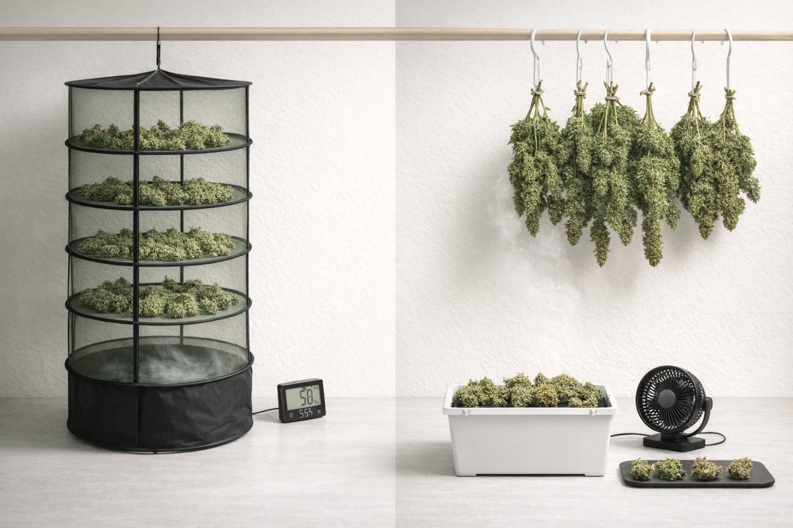

Direct fan pressure or overly aggressive airflow dries the shell quickly and can leave the center lagging behind.
Drying guide
Drying cannabis mistakes usually come from rushing the finish.
Common cannabis drying mistakes include too much direct airflow, unstable humidity, overdrying, uneven branch spacing, and moving flower into jars before interior moisture has settled enough. Drying should be controlled, not hurried.
The harvest is over, but the flower is still vulnerable. This is where people ruin a strong run with the kind of impatience that likes to dress up as efficiency.
Too much airflow
Dries the outside fast and leaves the center uneven.
Bad humidity control
Pushes the dry either too fast or too slow, neither of which feels elegant later.
Too-early jars
Turns a drying mistake into a curing problem almost immediately.
The main errors
These are the drying mistakes that show up over and over after otherwise solid harvests.
Big environmental jumps make the dry uneven and harder to read from day to day.
Poor spacing slows airflow where it matters and makes some areas dry differently than others.
One rushed move into cure can undo the patience the dry was supposed to protect.
Fast dry trap
Drying faster is not the same thing as drying better.
A quick outer dry can look convincing for a moment, but it often leaves the inner flower less stable than it seems. That is how jars end up feeling mysteriously wet a few hours later.
Slow and dirty trap
Dragging the process out in a damp room is not sophistication either.
If airflow is weak and humidity stays too high, drying can become uneven and risky in the other direction. Good drying is controlled. It is not helpful to drag the process out just to call it a slow dry.
What a good dry feels like
A good dry feels controlled, even, and a little boring.
- The room is moving air without blasting the flower directly.
- The dry feels steady from day to day instead of bouncing between swamp and desert.
- The outside and inside are moving toward balance instead of playing two different games.
- The move to jars feels measured, not like a scramble to salvage something that got weird overnight.
Why mistakes get expensive later
A bad dry can look efficient right up until the jars reveal the problem.
That is why drying mistakes linger. The flower can look convincing on the outside, then reveal trapped moisture, dull aroma, or brittle texture once the cure begins. By then the grower is not just correcting the dry. The grower is trying to manage the consequences of it.

Air
Indirect airflow only
Air should move through the room, not hit the buds directly.
Space
Give branches room
Even spacing helps the dry stay more consistent and keeps one side of the room from becoming a surprise zone.
Timing
Do not rush the handoff
The move to jars should happen because the flower is ready, not because the calendar says it is time.
Drying decisions
Most mistakes look reasonable in the moment. The result is where they reveal themselves.
| Mistake | What it causes | Better move |
|---|---|---|
| Direct fan blast | Outer shell dries too fast while the center lags behind. | Keep airflow indirect so the room moves air without bullying the buds. |
| Humidity swings | The dry becomes inconsistent and harder to read from day to day. | Watch the room closely and stabilize the environment before blaming the flower. |
| Crowded hang | Some buds dry differently than others and the room stops acting evenly. | Give branches enough space that airflow can do its job without surprise zones. |
| Too-early jars | The drying mistake becomes a curing mistake almost instantly. | Use the handoff logic in buds ready for jars before moving anything. |
When the room changes
The first move is to check the environment, not improvise a dozen fixes.
- If weather or HVAC shifts, read the room again before deciding the whole dry is ruined.
- If the flower suddenly feels ahead of schedule, check airflow direction before doing anything dramatic.
- If the room feels too damp, solve the room problem before pretending patience alone is sophistication.
- If the dry feels uneven, inspect spacing and circulation before you rewrite the whole finish plan.
Do not confuse these
Patience is not neglect, and airflow is not aggression.
Beginners often confuse indirect airflow with weak airflow, or slower drying with better drying, or patience with ignoring the room. None of those are the same thing. Good drying is controlled, observed, and adjusted in small ways when the room actually asks for it.
What beginners get wrong
Drying mistakes usually start with good intentions and bad patience.
- Pointing a fan directly at hanging flower because airflow sounds universally good.
- Failing to watch the room closely after a weather swing or HVAC change.
- Stacking branches too tightly and then wondering why some buds feel strangely different from others.
- Assuming a dry exterior means the flower is ready for jars right away.
- Treating every drying wobble like a crisis instead of a room-reading problem.